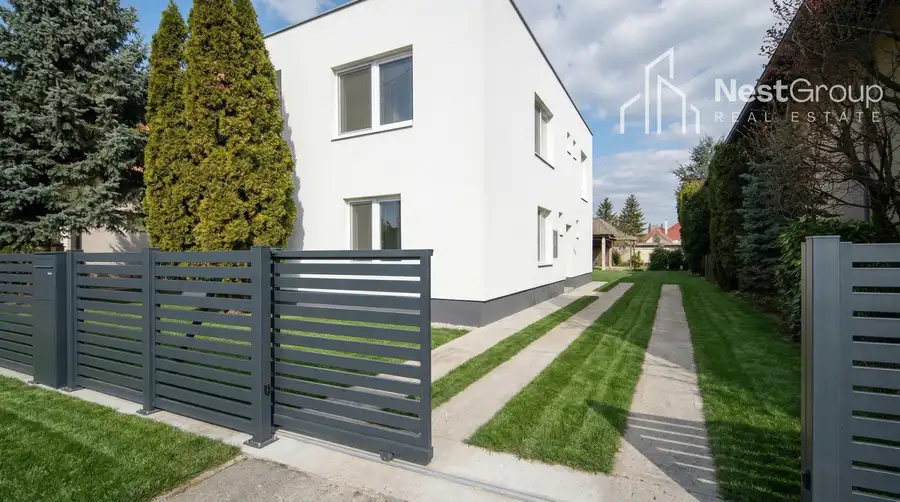
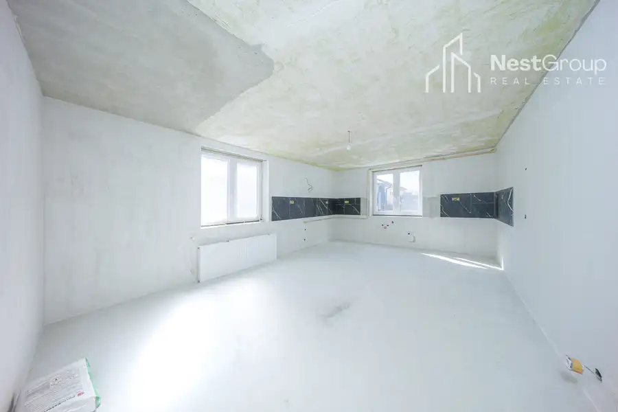
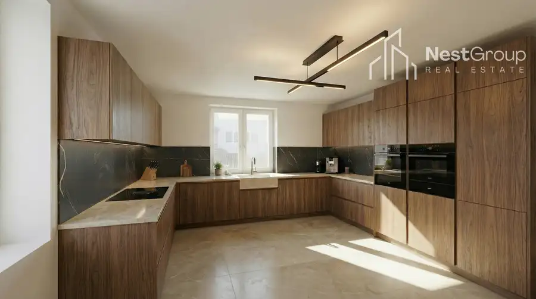
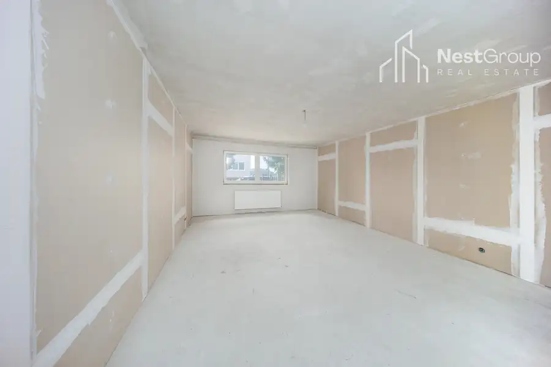
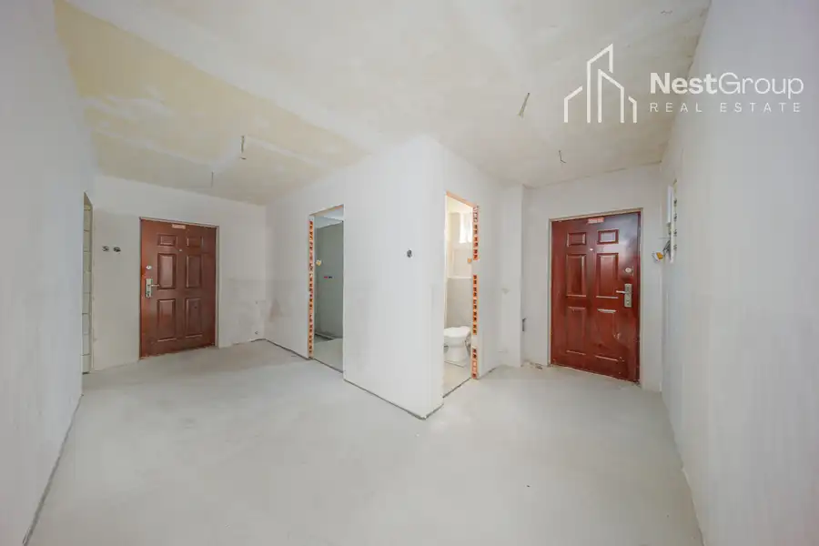
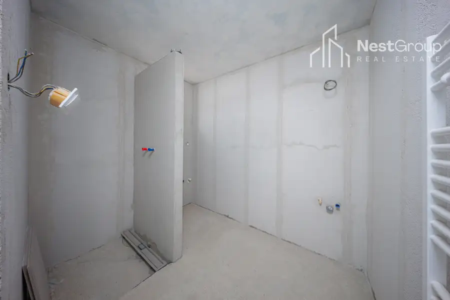
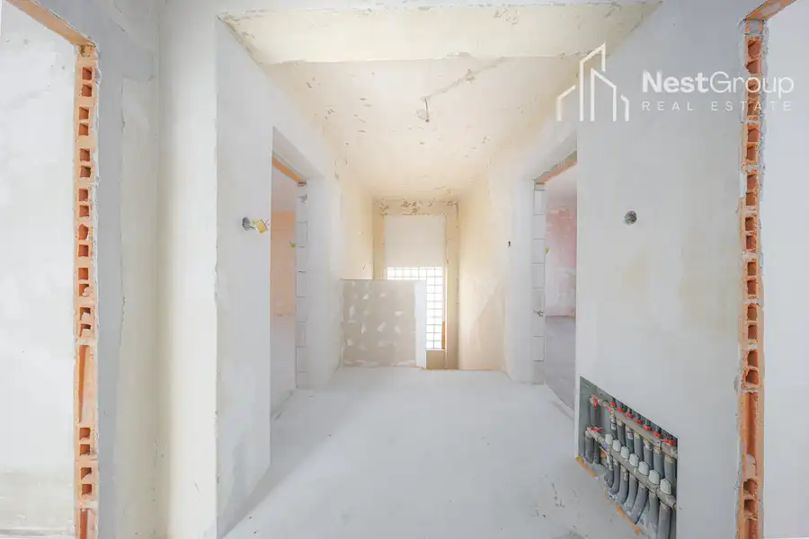
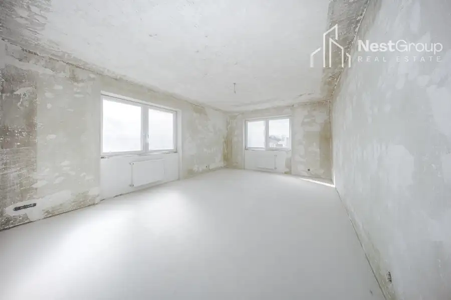

Veľký 5-izbový RD, 250 m2,pozemok 608 m2, kuchyňa v cene
Dolný Štál









- Plocha250 m²
- StavČiastočná rekonštrukcia
- VlastníctvoOsobné
O nehnuteľnosti
RODINNÝ DOM S VEĽKÝM POTENCIÁLOM - VYTVORTE SI BÝVANIE PODĽA SEBA.Hľadáte dom, ktorý si môžete dokončiť presne podľa vlastných predstáv a bez kompromisov? Práve ste ho našli.Realitná kancelária NestGroup ponúka exkluzívne na PREDAJ veľký 5-izbový rodinný dom v obci Dolný Štál, ktorý je ideálnou voľbou pre tých, ktorí chcú spojiť vlastnú víziu bývania s už pripraveným technickým základom.🏠 Základné informácie:• úžitková plocha: cca 250 m²• pozemok: 608 m²• dvojpodlažný dom• veľká pivnica• 5 izieb + veľká samostatná kuchyňa• 2 kúpeľneTo najdôležitejšie už máte vyriešené:• vymenené okná• nová elektroinštalácia• nové rozvody vody a kanalizácie• kúrenie zabezpečuje nový plynový kotol + 200 l zásobník na vodu• na pozemku sú všetky inžinierske siete vrátane kanalizácie• pripravená kabeláž na elektrickú bránu➡️ Vďaka tomu sa môžete sústrediť už len na dizajn a finálne dokončenie podľa vlastného štýlu.🌿 Pozemok a exteriér:• rovinatý pozemok s výmerou 608 m²• studňa• dostatok priestoru na záhradu, terasu či oddychovú zónu• hospodárska budova s veľkým úložným priestorom(ideálna ako dielňa, sklad alebo budúci hosťovský domček či vaše súkromné wellness)💡 Prečo je tento dom skvelá voľba?✔️ žiadne kompromisy – všetko si prispôsobíte podľa seba✔️ technické veci sú už hotové (čo šetrí čas aj peniaze)✔️ veľkorysý priestor v dome aj na pozemkuBONUS: kuchyňa aj dlažba do obidvoch kúpelní v cene Lokalita:Dom sa nachádza v obci Dolný Štál, len pár minút od mesta Dunajská Streda, ktoré ponúka kompletnú občiansku vybavenosť.➡️ V Dunajskej Strede nájdete:• školy, škôlky, obchody a služby• nemocnicu a zdravotné strediská• obľúbené Therme Dunajská Streda• športoviská, reštaurácie a nákupné možnosti➡️ Dopravné spojenie:• železničná zastávka priamo v obci• pravidelné autobusové spojenie• rýchla dostupnosť do Dunajská Streda• dobré napojenie smer Bratislava➡️ Lokalita tak spája pokoj vidieka s výbornou dostupnosťou všetkého potrebného.✨ Bonus navyše:V prípade záujmu vám vieme zabezpečiť aj kompletné dokončenie nehnuteľnosti podľa vašich predstáv, takže si môžete vytvoriť bývanie presne na mieru – bez starostí.Cena nehnuteľnosti: 175.000,- €V prípade záujmu kontaktujte makléra:Veronika Juríková0918 965 881veronika.jurikova@nestgroup.skĎalšie ponuky realitnej kancelárie nájdete na webovej stránke nestgroup.sk.
Parametre
- Druh
- Rodinný dom
- Dátum zverejnenia
- 04. 04. 2026
- Plocha pozemku
- 608 m²
- Počet izieb / miestností
- 5
- Stav nehnuteľnosti
- Čiastočná rekonštrukcia
- Typ
- Predaj
- Typ konštrukcie
- Tehlová
- Vlastníctvo
- Osobné
- Vybavenie
- Balkón, Pivnica, Špajza, Sklad
- Zariadenie
- Holopriestor
- Zastavaná plocha
- 125 m²
- Úžitková plocha
- 250 m²
Kde to je


Mohlo by Vás zaujímať
 Komerčné priestoryNové
3 700 €Prenájom lukratívne kancelárske priestory, Nové Mesto, BA III.
Nové Mesto, Bratislava
305 m²
Komerčné priestoryNové
3 700 €Prenájom lukratívne kancelárske priestory, Nové Mesto, BA III.
Nové Mesto, Bratislava
305 m²
 BytNové
395 000 €4-izb. byt v RD s terasami v súkromnom areáli s bazénom
Vrakuňa, Bratislava
4-izbový131 m²
BytNové
395 000 €4-izb. byt v RD s terasami v súkromnom areáli s bazénom
Vrakuňa, Bratislava
4-izbový131 m²
 DomNové
410 000 €Predaj 6- izbový RD s Dvojgarážou,veľký pozemok 1,65ha
Levice
270 m²
DomNové
410 000 €Predaj 6- izbový RD s Dvojgarážou,veľký pozemok 1,65ha
Levice
270 m²